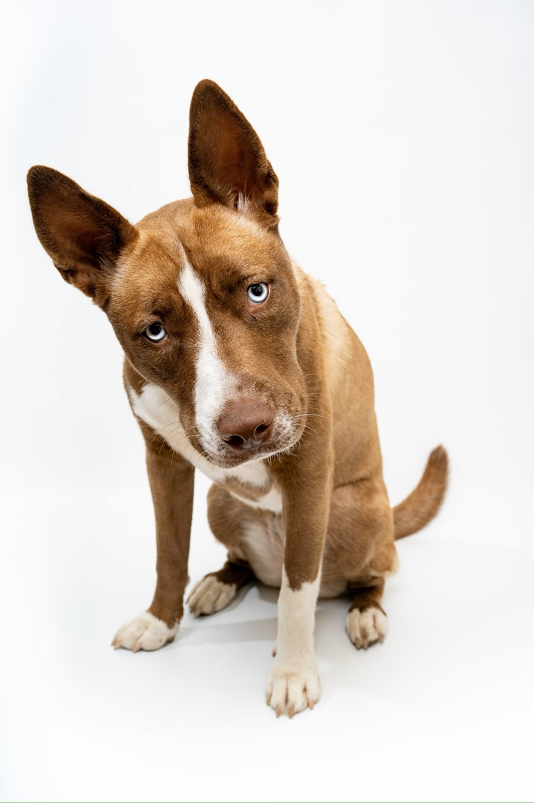

Их собачье дело
Британские ученые выяснили, что именно думает ваша собака, когда вы не делитесь с ней едой со стола.
Британские ученые выяснили, что именно думает ваша собака, когда вы не делитесь с ней едой со стола.
Хард-рок группа The Bulldozers впервые соберется в тур по Европе после почти 45-летнего перерыва.
Врачи предупреждают: наши смартфоны принадлежат не только нам. На них обитают целые колонии болезнетворных бактерий.
17-летний поклонник Чарли Чаплина из Новочеркасска съел на спор ботинок!
Жительница Самарской области вырастила на огороде 250-килограммовую тыкву.